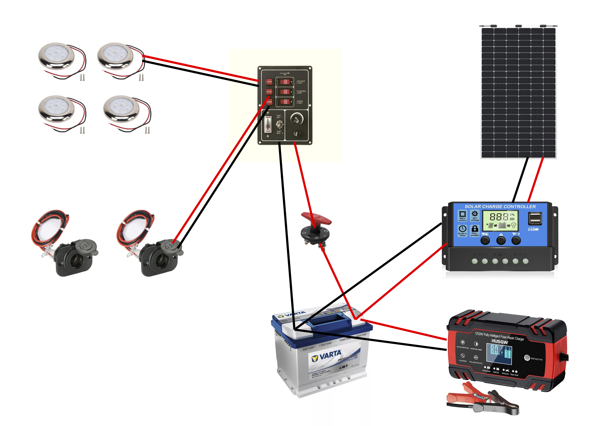

- Le panneau Solaire alimente la batterie, par l'intermédiaire d'un contrôleur (indispensable).
- La batterie peut être alimentée aussi par un chargeur 12 V, lui-même branché sur le secteur (220 V)
-
Le tableau de contrôle est relié à la batterie
- le plus passe par un coupe circuit.
- On verra comment mettre le moins à la masse si il y a lieu
-
Il y a un bouton pour les plafonniers
- Les plafonniers sont connectés en parallèle
-
Il y a un bouton pour les prises allume-cigare
- Les prises allume-cigare sont connectées en parallèle
Tous les fils qui vont vers le tableau électrique sont en 6mm2.
Les autres - ceux qui partent du tableau, sont en 2.5mm2.